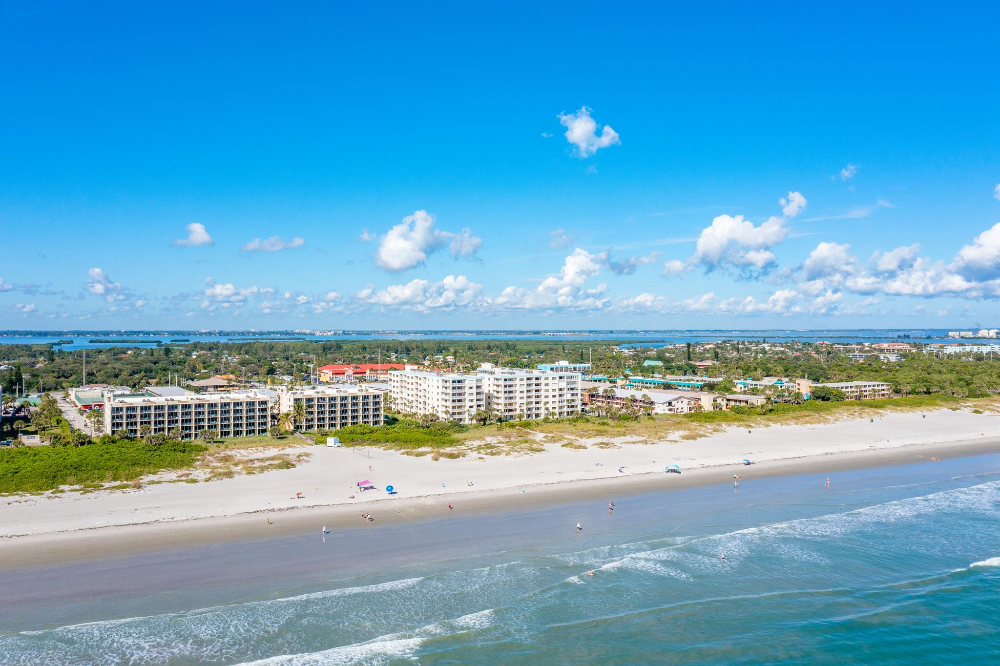
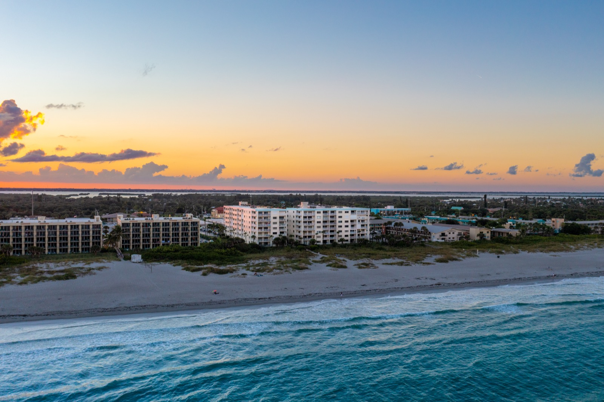
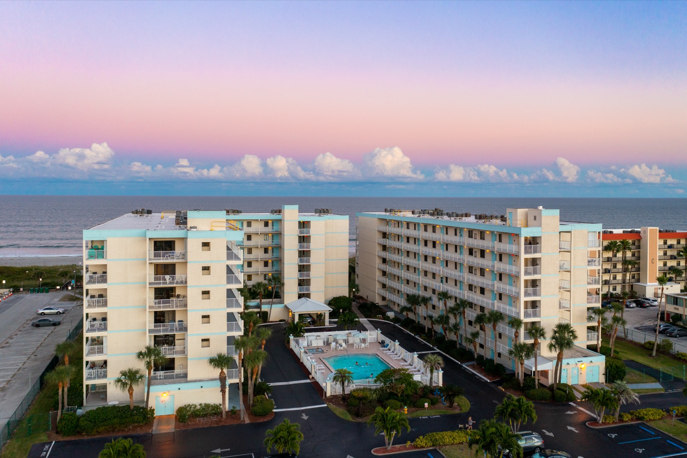

Why Sandcastles for the Season
Everything you need to actually live here — not just visit.

Directly on the Atlantic
Wake up to the ocean every morning. Not a view of a parking lot, not a pool deck — the actual Atlantic Ocean, steps from your door. Sandcastles sits right on N Atlantic Ave at the water's edge.

Full 2BR/2BA Condo
A real home, not a hotel room. Full kitchen so you can cook your own meals, in-unit washer and dryer, a living room to actually unwind in, and two full bedrooms — room for a guest, a home office, or both.

Heated Pool & Hot Tub
The pool and hot tub are heated year-round. On cooler January mornings when the ocean is brisk, the pool deck is where you'll start your day — coffee in hand, watching the sunrise over the water.

Monthly Stays Welcome
Sandcastles owners genuinely welcome long-term guests. Contact owners directly through their Airbnb or VRBO listing to discuss monthly rates — most are happy to negotiate for 30+ day bookings. Book early, especially for January through March.

Small, Friendly Building
This isn't a massive resort complex with hundreds of strangers cycling through. Sandcastles is a small, tight-knit building — you'll know your neighbors by name within a week, and that community is one of the things seasonal guests return for year after year.

Front-Row Rocket Launches
Rocket launches from Kennedy Space Center and Cape Canaveral SFS light up the sky from your balcony multiple times per month. Winter months offer some of the clearest viewing conditions of the year.


.JPG?width=800)
_001.jpg?width=800)


.jpg?width=800)